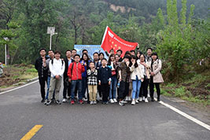

西安市林丰电子科技有限公司成立于2013年，致力于建筑工地、工程机械安全监控体化解决方案，是家以智能监控产品研发为主，集生产、 一体化解决方案，是一家以智能监控产品研发为主，集生产销售、服务和对外贸易为一体的高新技术企业。
公司以求真、务实的开拓精神，立足于物联网远程监控管理平台，相继推出塔机力及力矩监控系统（塔机“黑匣子”）群塔防碰撞 相继推出塔机力及力矩监控系统（塔机“黑匣子”）、群塔防碰撞系统、建筑机械可视化安全监控系统等系列化产品并先后通过欧盟 CE认证，新加坡MOM认证，产品远销港澳台、新加坡、马来西亚、菲律宾、澳大利亚、印度、俄罗斯、美国等国家和地区得到了市场的一致好评。
秉承一切为用户服务的宗旨，我公司在香港、新加坡建立了海外售后服务中心快速响应市场需求热忱服务广大客户。
安全施工是创造价值的基础，有效的监控让施工更加安全林丰人愿为您的事业提供高品质的产品和全方位的专业服务。
公司以求真、务实的开拓精神，立足于物联网远程监控管理平台，相继推出塔机力及力矩监控系统（塔机“黑匣子”）群塔防碰撞 相继推出塔机力及力矩监控系统（塔机“黑匣子”）、群塔防碰撞系统、建筑机械可视化安全监控系统等系列化产品并先后通过欧盟 CE认证，新加坡MOM认证，产品远销港澳台、新加坡、马来西亚、菲律宾、澳大利亚、印度、俄罗斯、美国等国家和地区得到了市场的一致好评。
秉承一切为用户服务的宗旨，我公司在香港、新加坡建立了海外售后服务中心快速响应市场需求热忱服务广大客户。
安全施工是创造价值的基础，有效的监控让施工更加安全林丰人愿为您的事业提供高品质的产品和全方位的专业服务。